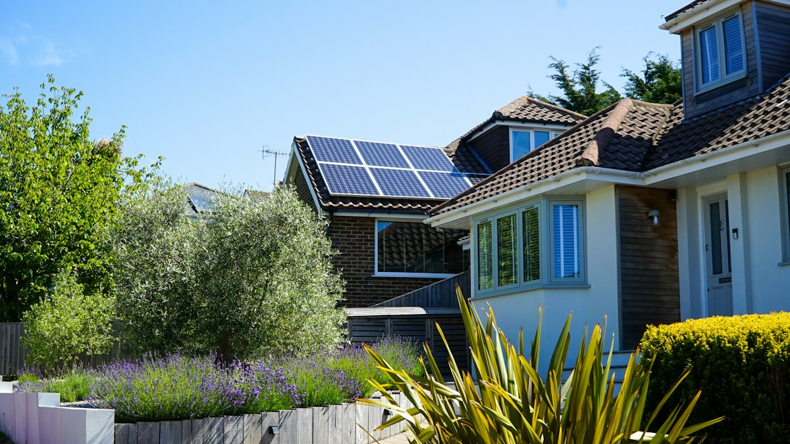
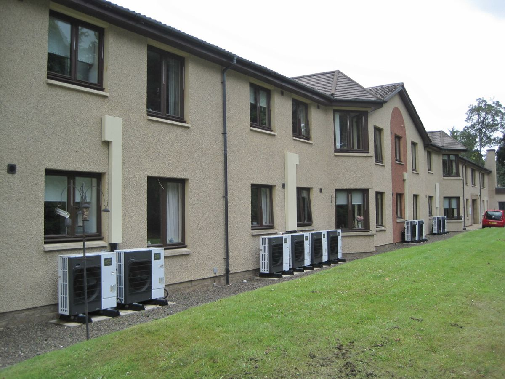

MEasuring Renewables uptake & Value (MERV)
MERV — better evidence on the uptake of renewable technologies in UK housing, and on what they do to property values


{kind=link}
Overview
Why it matters
There is no pathway to Net Zero without decarbonising heat in domestic buildings. Existing fossil-fuel heating has to be replaced (retrofitting), and new homes need clean heating from the outset. Given their high efficiencies, heat pumps are widely recognised as the best solution for the majority of houses, with heat networks playing an important role for flats and higher-density housing. Low-efficiency direct electric systems (storage and panel heaters) are sometimes installed to minimise up-front costs, but they burden occupiers with higher running costs. Photovoltaic (PV) panels and batteries also have a role to play in local power generation and demand management. We use the term renewables to refer to these five technologies.
The challenge
Progress in the UK is slow. Despite national and devolved government targets for heat decarbonisation, the UK lacks authoritative, transparent indicators of progress. Better measures would enable tracking at local as well as national level, providing insights into barriers and enablers, and into social inequalities in the transition.
| Estimated share of dwellings with… | UK | EU |
|---|---|---|
| Heat pumps | 2% | 16% |
| Any form of clean heating | 9% | – |
| Solar PV | 7% | 10% |
| Batteries | 1% | – |
Note: various sources.
High up-front costs discourage faster adoption. Evidence of ‘green premiums’ on house values for different technologies could incentivise adoption, but is currently very weak. To be of value to property owners and others, this evidence needs to capture variations in premiums across the housing stock and over time, while minimising the risk of bias (the ‘omitted variables’ problem).
Research questions
- How far has the uptake of the five renewable technologies progressed across the UK housing stock, and how can it be measured consistently at property and small-area level?
- How does uptake vary with property, social and locational characteristics — and what does this tell us about barriers, enablers and inequalities in the transition?
- Do renewables attract a ‘green premium’ in sale prices, and how does this vary by technology, property type, location and over time?
- How robust are green-premium estimates to unobserved differences in property quality, and can measures of quality derived from interior images reduce this bias?
Objectives
MERV aims to provide better evidence of the uptake of renewable technologies in UK housing and of the varied impact of these on property values. Our five objectives are:
- New measures of uptake. Develop new measures of renewables uptake through a novel combination of administrative and ‘smart’ data sources. Measures will be at property level, aggregated to various spatial units.
- Explaining variation. Model variations in uptake in relation to property, social and locational characteristics, adding to knowledge on barriers to, and enablers of, uptake. These models also provide measures of progress for local authorities which account for the different contexts and challenges in each.
- Green premiums. Link uptake to sales prices to identify green premiums for different renewable technologies, estimating variations by property type, location and over time using traditional hedonic and causal machine-learning models.
- Omitted variables. Explore potential ‘omitted variables’ problems in estimates of green premiums using novel measures of property quality derived from internal images with computer-vision models.
- Knowledge exchange. Disseminate results to relevant stakeholders through knowledge-exchange reports and events which promote key findings and the use of our novel datasets.
Timeline
The project runs for 18 months. The phasing below is indicative and will be updated as work progresses. draft — phases to be confirmed
| Months 1–6 | Data assembly and linkage; first property-level measures of renewables uptake Objective 1 |
| Months 4–12 | Modelling variations in uptake; progress measures for local authorities Objective 2 |
| Months 7–15 | Estimating green premiums with hedonic and causal machine-learning models Objective 3 |
| Months 10–16 | Property-quality measures from interior images; robustness of premium estimates Objective 4 |
| Months 12–18 | Knowledge exchange: reports, policy briefs, stakeholder events and data release Objective 5 |
Applications and benefits
- Local government and partners. Small-area measures of renewables progress provide valuable input to the local strategies for heat decarbonisation or energy-demand reduction which they coordinate or deliver. Our measures show how each area is progressing given the particular challenges or constraints it faces.
- National and devolved governments. Our measures can be used to monitor overall progress with Net Zero strategies, to target additional support on the basis of evidence, and to evaluate interventions.
- Lenders and valuers. Evidence on green premiums will help property professionals value dwellings and assess risks.
- Property owners, purchasers and installers. Owners and potential purchasers making investment decisions on retrofit, and installers delivering renewables solutions, will benefit from clearer evidence on the value of each technology.
Team & partners
MERV is led from the Urban Big Data Centre (UBDC), an ESRC-funded centre of excellence in data-driven urban research based in Urban Studies & Social Policy at the University of Glasgow.
- Prof Nick Bailey — Principal Investigator
- Prof David McArthur — Co-Investigator
- Prof Qunshan Zhao — Co-Investigator
- Dr Michail Georgiou — Co-Investigator
- Research Associate — vacancy open until 6 October 2026: see the advert
Partners and stakeholders
The project works with the people who will use its measures and evidence: local authorities responsible for local heat and energy strategies, national and devolved governments monitoring progress towards Net Zero, and property professionals — lenders, valuers and retrofit installers — who need robust evidence on the value of renewables. Partner organisations will be listed here. partners to be confirmed
Outputs
MERV has only just started, so this section is mostly empty for now. Papers, data, code and policy briefs will be added here as they are released; wherever possible, outputs will be open access.
Papers
- No project papers yet.
Data
- Property-level and small-area measures of renewables uptake for the UK — to be released through the UBDC Data Service where licensing allows.
Code
- Code for constructing the uptake measures and for the green-premium models will be published on the UBDC GitHub under an open licence.
Policy briefs and reports
- Knowledge-exchange reports and briefings for local and national government and the property sector, accompanying stakeholder events (Objective 5).
Related earlier work
- Ou, Y., Bailey, N., McArthur, D. & Zhao, Q. (2026). Willingness-to-pay for energy efficient homes: New insights from the 2022 energy crisis in the United Kingdom. Energy Research & Social Science. doi:10.1016/j.erss.2026.104700
- Sun, M., Han, C., Nie, Q., Xu, J., Zhang, F. & Zhao, Q. (2022). Understanding building energy efficiency with administrative and emerging urban big data by deep learning in Glasgow. Energy and Buildings. doi:10.1016/j.enbuild.2022.112331
- UBDC impact story: How do solar panels affect property prices in the UK? — a machine-learning analysis of 1.5 million UK property listings held by UBDC.
News
| 24 Sep 2026 | Project website launched. |
| 16 Sep 2026 | Research Associate post advertised — full time, up to 18 months, closing 6 October 2026. Advert on jobs.ac.uk. |
| TBC 2026 | MERV starts: an 18-month ESRC award to the Urban Big Data Centre, University of Glasgow. |
Funding & contact
MERV is funded by the Economic and Social Research Council (ESRC), part of UK Research and Innovation, under grant reference UKRI5675. The project is hosted by the Urban Big Data Centre at the University of Glasgow.
Questions about the project? Contact the Principal Investigator, Prof Nick Bailey, at nick.bailey@glasgow.ac.uk.
Reuse
Text and figures on this page are licensed under Creative Commons Attribution CC BY 4.0. Source code is available at github.com/urbanbigdatacentre/merv. Photographs reused from other sources are credited in their captions and carry their own licences; the ESRC, UBDC and University of Glasgow logos are the property of their owners and are not covered by the CC BY licence.